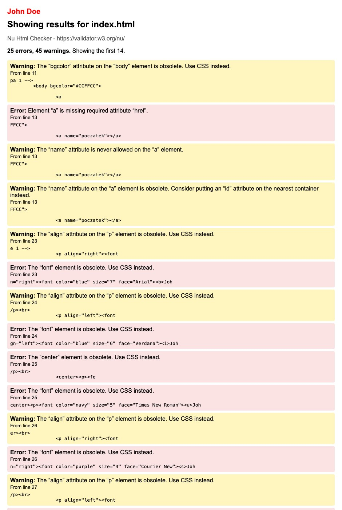
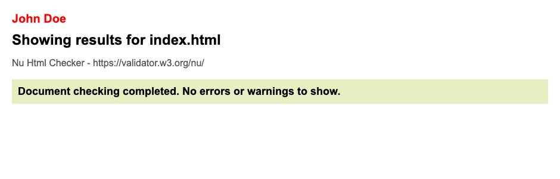

Walidacja strony HTML to proces sprawdzania poprawności kodu HTML pod kątem zgodności z obowiązującymi standardami, w celu wykrycia błędów i nieprawidłowości w strukturze dokumentu.
Walidator HTML to narzędzie, które sprawdza poprawność kodu HTML pod względem zgodności ze standardami i wskazuje znalezione błędy oraz nieprawidłowości w kodzie strony internetowej. Walidatory są najczęściej w postaci strony WWW.
W3C to skrót od World Wide Web Consortium. Jest to międzynarodowe konsorcjum, które opracowuje standardy dla stron internetowych. Organizacja ta dba o to, aby strony i aplikacje internetowe działały poprawnie, były dostępne i zgodne z ustalonymi standardami.
Pierwsza walidacja w https://validator.w3.org/ pokazała błędy: 25, ostrzeżenia: 45. Najczęstsze błędy to przestarzałe znaczniki i atrybuty: font, center, align, bgcolor, border w img, atrybuty hr oraz name w a. Zastąpiłem je stylami CSS (atrybut style).

Po poprawkach druga walidacja nie pokazała żadnych błędów ani ostrzeżeń.
